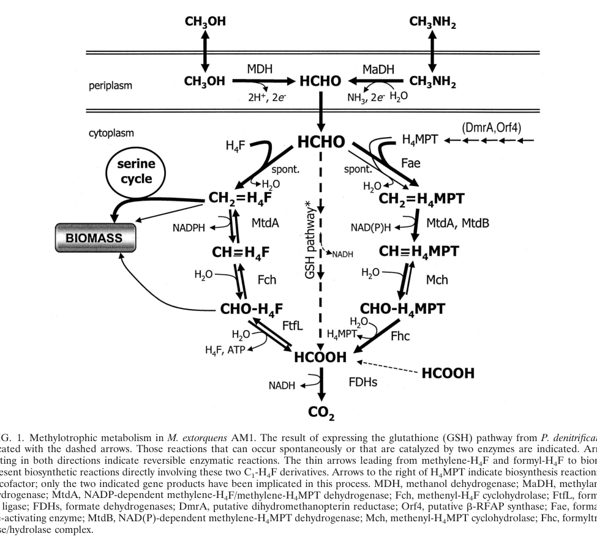

mch encodes methenyltetrahydromethanopterin cyclohydrolase (EC 3.5.4.27), which catalyzes the third step in formaldehyde degradation via the H4MPT route. The enzyme reversibly interconverts the H4MPT-bound formyl and methenyl C1 states; in the oxidative (hydrolytic) direction it hydrolyzes 5,10-methenyl-H4MPT+ (the product of the mtdB dehydrogenase) to N5-formyl-H4MPT, continuing the oxidation pathway from formaldehyde toward formate. Mch functions as a homodimer in the cytoplasm with optimal activity at pH 8.5 and 40C, and requires salt for optimal activity. This enzyme is part of a conserved archaeal-like C1 transfer pathway that links methylotrophic bacteria to methanogenic archaea. In M. extorquens AM1, mch could not be deleted in the wild-type background (consistent with a critical role in detoxifying cytoplasmic formaldehyde), and a conditional deletion in an H4MPT-biosynthesis (orf4) background was defective for growth on methanol or methylamine. Direct protein sequencing has confirmed the enzyme's N-terminal sequence, and it belongs to the MCH family of cyclohydrolases. Together with fae (step 1), mtdB (step 2), and subsequent enzymes in the pathway, Mch completes the essential formaldehyde detoxification and oxidation system in methylotrophic metabolism.
| GO Term | Evidence | Action | Reason |
|---|---|---|---|
|
GO:0005737
cytoplasm
|
IEA
GO_REF:0000120 |
ACCEPT |
Summary: Correct - Mch is localized to the cytoplasm where it participates in formaldehyde degradation [file:METEA/mch/mch-uniprot.txt, "SUBCELLULAR LOCATION: Cytoplasm"]. The functional genetics in M. extorquens AM1 independently support a soluble cytoplasmic site of action, since the H4MPT pathway detoxifies intracellular formaldehyde and the toxic phenotype of pathway mutants can be alleviated by installing an alternative cytoplasmic oxidation route.
Supporting Evidence:
file:METEA/mch/mch-deep-research-falcon.md
Mch is a **soluble cytoplasmic enzyme** operating on H4MPT-bound intermediates
|
|
GO:0006730
one-carbon metabolic process
|
IEA
GO_REF:0000120 |
KEEP AS NON CORE |
Summary: Correct - Mch is essential for C1 metabolism in the H4MPT pathway [file:METEA/mch/mch-uniprot.txt, "One-carbon metabolism; formaldehyde degradation; formate from formaldehyde (H(4)MPT route): step 3/5"]. Mch transfers one-carbon units between oxidation states on the H4MPT carrier rather than the folate carrier, and insertion mutants across this C1 gene cluster are unable to grow on C1 compounds.
Reason: This high-level process term is correct but is fully subsumed by the more specific and informative formaldehyde catabolic process (GO:0046294) and the cyclohydrolase molecular function (GO:0018759); retained as non-core context.
Supporting Evidence:
file:METEA/mch/mch-deep-research-falcon.md
placing it in the H4MPT carrier system rather than the folate carrier system
PMID:9651254
were all unable to grow on C1 compounds
|
|
GO:0016787
hydrolase activity
|
IEA
GO_REF:0000043 |
KEEP AS NON CORE |
Summary: Correct but too general - Mch is a cyclohydrolase (EC 3.5.4.27) that hydrolyzes methenyl-H4MPT+; the more specific child term GO:0018759 (methenyltetrahydromethanopterin cyclohydrolase activity) is already annotated to this gene and captures the precise activity.
Reason: GO:0016787 is a high-level ancestor of the specific cyclohydrolase activity (GO:0018759) that is also annotated here; it adds no information beyond the specific term and is retained only as non-core hierarchical context.
Supporting Evidence:
file:METEA/mch/mch-deep-research-falcon.md
classified as **EC 3.5.4.27**
|
|
GO:0018759
methenyltetrahydromethanopterin cyclohydrolase activity
|
IEA
GO_REF:0000120 |
ACCEPT |
Summary: Correct - Mch catalyzes the hydrolysis of methenyl-H4MPT+ to 5-formyl-H4MPT [file:METEA/mch/mch-uniprot.txt, "Catalyzes the hydrolysis of methenyl-H(4)MPT(+) to 5-formyl-H(4)MPT"]. This is the core molecular function of the gene. The reaction is a reversible interconversion of the H4MPT-bound formyl and methenyl C1 states; in the physiological oxidative direction it operates hydrolytically toward N5-formyl-H4MPT. The GO term definition (5,10-methenyl-H4MPT + H2O = N5-formyl-H4MPT + H+) exactly matches the UniProt-documented catalytic activity (RHEA:19053, EC 3.5.4.27).
Supporting Evidence:
file:METEA/mch/mch-deep-research-falcon.md
catalyzes the **reversible interconversion** between the H4MPT‑bound formyl and methenyl states
|
|
GO:0046294
formaldehyde catabolic process
|
IEA
GO_REF:0000120 |
ACCEPT |
Summary: Correct - Mch catalyzes step 3/5 in formaldehyde degradation via the H4MPT route [file:METEA/mch/mch-uniprot.txt, "formaldehyde degradation; formate from formaldehyde (H(4)MPT route): step 3/5"]. In M. extorquens AM1 this H4MPT-linked pathway is the primary route for detoxifying and oxidizing the toxic formaldehyde generated during methanol/C1 growth, and mch sits centrally in the gene cluster with fae and mtdB. This best represents the core biological process of the gene.
Supporting Evidence:
file:METEA/mch/mch-deep-research-falcon.md
the H4MPT pathway functions as the **primary formaldehyde detoxification and oxidation route**
file:METEA/mch/mch-deep-research-falcon.md
in a cluster that includes (among others) **fae**, **mtdB**, and **fhc** genes
|
The research report should be a detailed narrative explaining the function, biological processes, and localization of the gene product. Citations should be given for all claims.
You should prioritize authoritative reviews and primary scientific literature when conducting research. You can supplement
this with annotations you find in gene/protein databases, but these can be outdated or inaccurate.
We are specifically interested in the primary function of the gene - for enzymes, what reaction is catalyzed, and what is the substrate specificity? For transporters, what is the substrate? For structural proteins or adapters, what is the broader structural role? For signaling molecules, what is the role in the pathway.
We are interested in where in or outside the cell the gene product carries out its function.
We are also interested in the signaling or biochemical pathways in which the gene functions. We are less interested in broad pleiotropic effects, except where these elucidate the precise role.
Include evidence where possible. We are interested in both experimental evidence as well as inference from structure, evolution, or bioinformatic analysis. Precise studies should be prioritized over high-throughput, where available.
The gene symbol mch in Methylorubrum extorquens strain AM1 (formerly Methylobacterium extorquens AM1; strain ATCC 14718 / DSM 1338 / JCM 2805 / NCIMB 9133) corresponds to methenyl‑tetrahydromethanopterin cyclohydrolase (also written methenyl‑H4MPT cyclohydrolase), consistent with UniProt O85014 (RecName: methenyltetrahydromethanopterin cyclohydrolase; EC 3.5.4.27; MCH family). In the AM1 genomic methylotrophy module, mch is listed explicitly as “Methenyl‑H4MPT cyclohydrolase,” and was also referred to as orfZ in early cluster annotations (GenBank accession AF032114 in the island/cluster description). (chistoserdova2003methylotrophyinmethylobacterium pages 3-4, chistoserdova2003methylotrophyinmethylobacterium pages 4-5)
Tetrahydromethanopterin (H4MPT) is a specialized C1‑carrier cofactor (distinct from tetrahydrofolate/H4F) used in many methylotrophs and methanogens to bind and transform single‑carbon units across oxidation states. In M. extorquens AM1, the H4MPT‑linked pathway is the major route for handling formaldehyde, a highly reactive and toxic intermediate produced during growth on methanol and other C1 substrates. (marx2003formaldehydedetoxifyingroleof pages 1-2, marx2003formaldehydedetoxifyingroleof media 85901d2f)
Mch is a soluble cyclohydrolase of the MCH family (Pfam PF02289; InterPro IPR003209 per UniProt context supplied by the user) and is classified as EC 3.5.4.27. (pomper2001characterizationofthe pages 1-2, schmitz2024oxygenicdenitrificationand pages 72-74)
Mch catalyzes the reversible interconversion between the H4MPT‑bound formyl and methenyl states:
Structural/biochemical literature reports this equilibrium is only weakly exergonic under standard conditions (ΔG°′ ~ −4.6 to −5 kJ/mol, depending on convention and direction reported), consistent with reversibility. (grabarse1999thecrystalstructure pages 1-2, shima2020structuralbasisof pages 6-7)
Substrate specificity (functional annotation level): Mch acts on H4MPT‑bound C1 intermediates (formyl‑H4MPT and methenyl‑H4MPT+), placing it in the H4MPT carrier system rather than the folate carrier system. (shima2020structuralbasisof pages 7-8, grabarse1999thecrystalstructure pages 2-3)
In AM1, mch is part of the archaeal‑like H4MPT‑linked C1 transfer / formaldehyde oxidation module, in a cluster that includes (among others) fae, mtdB, and fhc genes; early genome-based reconstructions show mch positioned within a core block (e.g., fhcCDAB … mtdB … mch … fae), implying coordinated expression and pathway integration. (chistoserdova2003methylotrophyinmethylobacterium pages 4-5, chistoserdova2003methylotrophyinmethylobacterium pages 3-4)
A pathway schematic from a classic physiological genetics study shows Mch acting between methylene/methenyl steps and downstream formyl‑H4MPT processing en route to formate/CO2 (along with other H4MPT pathway enzymes and biosynthesis genes such as dmrA and orf4). (marx2003formaldehydedetoxifyingroleof media 85901d2f)
A key experimental conclusion in AM1 is that the H4MPT pathway functions as the primary formaldehyde detoxification and oxidation route, with mutants in H4MPT biosynthesis or early pathway steps exhibiting a characteristic methanol-sensitive phenotype (inhibition by methanol during growth on multicarbon substrates), consistent with toxic formaldehyde accumulation when this module is impaired. (marx2003formaldehydedetoxifyingroleof pages 1-2, marx2003formaldehydedetoxifyingroleof media 269c1682)
In M. extorquens AM1, repeated attempts to create mch deletion mutants in wild type failed (“No mutants were obtained in the wild type using the deletion constructs for Mch (mch::kan)”), while deletions could be generated in a background defective in H4MPT biosynthesis (orf4). This pattern is consistent with strong selection against complete disruption of late H4MPT steps in the presence of formaldehyde flux, potentially due to accumulation of toxic intermediates or catastrophic failure to detoxify formaldehyde. (marx2003formaldehydedetoxifyingroleof pages 6-8, marx2003formaldehydedetoxifyingroleof pages 2-3)
An orf4 mch::kan mutant was readily constructed. This strain grew normally on multicarbon substrates such as succinate/formate but was defective for growth on methanol or methylamine, consistent with a central role for Mch (and the H4MPT pathway) in methylotrophic C1 metabolism. (marx2003formaldehydedetoxifyingroleof pages 6-8)
The AM1 mutant phenotypes provide several actionable quantitative benchmarks relevant to functional annotation and strain engineering:
Direct subcellular localization experiments for AM1 Mch were not retrieved in the available texts; however, multiple lines of evidence support a cytoplasmic, soluble site of function:
Thus, for functional annotation, the strongest evidence-based statement is that Mch is a soluble cytoplasmic enzyme operating on H4MPT-bound intermediates. (marx2003formaldehydedetoxifyingroleof pages 8-8, marx2003formaldehydedetoxifyingroleof pages 1-2)
A high-resolution structure of an archaeal Mch (from Methanopyrus kandleri) showed an oligomeric enzyme with a conserved pocket/cleft between domains, with bound phosphate ions interpreted as markers for substrate phosphate positioning. The study explicitly reports the reversible conversion between N5-formyl‑H4MPT and N5,N10‑methenyl‑H4MPT+ and notes the absence of chromophoric prosthetic groups. (grabarse1999thecrystalstructure pages 1-2, grabarse1999thecrystalstructure pages 7-8)
An authoritative structural review synthesizes residue-level mechanistic understanding for Mch, describing cyclization via an N10 nucleophilic attack forming a tetrahedral intermediate and identifying Glu186 as a principal acid/base catalyst with Arg183 modulating its chemistry; mutational evidence supports these assignments in the archaeal enzymes reviewed. (shima2020structuralbasisof pages 7-8)
While these residue numbers come from archaeal homologs, they are widely used as mechanistic anchors for interpreting conserved motifs in bacterial MCH-family proteins such as AM1 Mch (UniProt O85014), supporting confident inference of catalytic chemistry even when AM1-specific structural work is not in hand. (shima2020structuralbasisof pages 7-8, grabarse1999thecrystalstructure pages 7-8)
A 2024 study in Methylorubrum extorquens PA1 (close relative of AM1) identified and activated a glycine betaine (GB) catabolic pathway that generates free formaldehyde, and proposed that this formaldehyde is oxidized to formate by the H4MPT pathway and then to CO2 via formate dehydrogenase to generate energy/reducing power. RT-qPCR evidence showed increased expression of fae and mtdB during GB growth, consistent with increased formaldehyde oxidation demand through the H4MPT module. (hying2024glycinebetainemetabolism pages 9-11)
Although mch itself was not highlighted in the excerpted sections, the study provides contemporary (2024) experimental reinforcement that H4MPT-linked formaldehyde oxidation remains a central node in Methylorubrum physiology beyond canonical methanol growth, broadening “real-world” contexts where Mch is likely required. (hying2024glycinebetainemetabolism pages 9-11)
Within the retrieved and accessible sources, no 2023–2024 primary study was found that directly re-characterizes AM1 mch biochemistry/structure or provides new AM1-specific quantitative kinetics/localization. Consequently, AM1-specific claims in this report are anchored primarily in foundational genetics/physiology and genomic reconstruction studies, supplemented by 2024 evidence in a close relative (PA1). (marx2003formaldehydedetoxifyingroleof pages 6-8, hying2024glycinebetainemetabolism pages 9-11)
Methylorubrum extorquens is a widely used chassis for methylotrophic biotechnology; robust methanol utilization requires tight control of formaldehyde flux and detoxification. The AM1 genetics show that disrupting key H4MPT pathway steps leads to methanol/formaldehyde sensitivity, and that installing an alternative cytoplasmic oxidation route can partly rescue this, illustrating a design principle for engineering: formaldehyde detox capacity is a key bottleneck. (marx2003formaldehydedetoxifyingroleof pages 6-8, marx2003formaldehydedetoxifyingroleof pages 8-8)
The ability of a glutathione-linked formaldehyde oxidation pathway to protect AM1 mutants under high methanol/formaldehyde conditions demonstrates practical “plug-in” detoxification modules that can be used to enhance tolerance or rewire C1 flux, even though the native H4MPT pathway is primary. (marx2003formaldehydedetoxifyingroleof pages 6-8, marx2003formaldehydedetoxifyingroleof pages 8-8)
mch (UniProt O85014) encodes a soluble cytoplasmic methenyltetrahydromethanopterin cyclohydrolase (EC 3.5.4.27) that catalyzes the reversible interconversion formyl‑H4MPT ↔ methenyl‑H4MPT+, a central step in the H4MPT-linked formaldehyde oxidation/detoxification pathway required for methylotrophic growth on methanol and other C1 substrates in M. extorquens AM1; inability to obtain mch deletions in wild type and conditional deletion phenotypes support its critical physiological role. (chistoserdova2003methylotrophyinmethylobacterium pages 3-4, marx2003formaldehydedetoxifyingroleof pages 6-8)
The following table summarizes the key functional-annotation points and links them to the strongest evidence.
| Item | Evidence summary | Strongest citation IDs |
|---|---|---|
| Identity | mch in Methylorubrum extorquens AM1 corresponds to methenyl-/methenyltetrahydromethanopterin cyclohydrolase and is part of the H4MPT-linked C1 transfer module; older genomic literature also lists the synonym orfZ in the H4MPT cluster, consistent with the UniProt assignment for O85014. | (chistoserdova2003methylotrophyinmethylobacterium pages 3-4, chistoserdova2003methylotrophyinmethylobacterium pages 4-5) |
| Enzyme class / EC | Mch is a cyclohydrolase classified as EC 3.5.4.27. In pathway-focused work on AM1, it is explicitly named as a key enzyme of H4MPT-dependent formaldehyde oxidation and grouped with Fae, Mtd, Ftr, and Fmd/Fhc functions. | (pomper2001characterizationofthe pages 1-2, schmitz2024oxygenicdenitrificationand pages 72-74) |
| Reaction | Mch catalyzes the reversible interconversion of N5-formyl-H4MPT and N5,N10-methenyl-H4MPT+, with water/proton involvement; authoritative structural review literature reports a small negative standard free energy change for the cyclization direction (about −4.6 to −5 kJ/mol). | (grabarse1999thecrystalstructure pages 1-2, shima2020structuralbasisof pages 6-7) |
| Substrates / products | The chemically relevant carrier is tetrahydromethanopterin (H4MPT) rather than tetrahydrofolate. Depending on direction, the substrate/product pair is formyl-H4MPT ↔ methenyl-H4MPT+; this places Mch immediately downstream of methylene-H4MPT dehydrogenase and upstream of formyl-transfer/hydrolase reactions. | (marx2003formaldehydedetoxifyingroleof pages 1-2, shima2020structuralbasisof pages 7-8) |
| Pathway role | In AM1, mch sits in the H4MPT-linked formaldehyde oxidation pathway, which is the major route converting cytoplasmic formaldehyde derived from methanol into less toxic downstream C1 intermediates and ultimately formate/CO2. The pathway schematic and physiological analysis place Mch centrally between methylene-H4MPT oxidation and formyl-H4MPT processing. | (marx2003formaldehydedetoxifyingroleof pages 1-2, marx2003formaldehydedetoxifyingroleof media 85901d2f) |
| Genetic evidence in AM1 | Direct deletion of mch in wild-type AM1 could not be recovered, whereas an orf4 mch::kan mutant could be generated in an H4MPT-biosynthesis-defective background. That double-mutant background grows on multicarbon substrates but is defective on methanol/methylamine, supporting that mch is required for normal C1 metabolism and formaldehyde handling in AM1. | (marx2003formaldehydedetoxifyingroleof pages 6-8, marx2003formaldehydedetoxifyingroleof pages 2-3) |
| Localization | The functional evidence is most consistent with a cytoplasmic soluble enzyme acting on H4MPT-bound C1 intermediates, because the toxic phenotype in H4MPT-pathway mutants reflects inability to detoxify cytoplasmic formaldehyde and can be alleviated by installing an alternative cytoplasmic glutathione-dependent oxidation route. | (marx2003formaldehydedetoxifyingroleof pages 8-8, marx2003formaldehydedetoxifyingroleof pages 1-2) |
| Key mechanistic residues / structure evidence | High-resolution structural work from archaeal homologs shows Mch is an oligomeric enzyme with a deep active-site cleft/pocket and no required chromophoric prosthetic group. A leading mechanistic model assigns Glu186 as the principal acid/base catalyst and Arg183 as a modulator of its chemistry during cyclization/dehydration of formyl-H4MPT to methenyl-H4MPT+. | (grabarse1999thecrystalstructure pages 7-8, shima2020structuralbasisof pages 7-8) |
| 2024 developments | No 2023–2024 study focused specifically on AM1 mch was retrieved, but a 2024 study in the close relative M. extorquens PA1 showed that glycine betaine/dimethylglycine catabolism generates free formaldehyde that is routed into the H4MPT oxidation pathway, with induction of fae and mtdB and decreased ftfL relative to methanol growth. This expands current understanding of the ecological contexts in which the H4MPT pathway is deployed. | (hying2024glycinebetainemetabolism pages 9-11) |
| Applications | Mch is relevant to methanol-based biotechnology because it supports formaldehyde detoxification/energy metabolism, a core constraint in engineering Methylorubrum for C1 bioproduction. Experimentally, heterologous replacement of H4MPT-linked detoxification with a glutathione-dependent route can partially rescue formaldehyde/methanol sensitivity, underscoring the pathway’s importance for robust strain design. | (marx2003formaldehydedetoxifyingroleof pages 6-8, yanpirat2020lanthanidedependentmethanoland pages 12-14) |
Table: This table summarizes the most important functional-annotation points for Methylorubrum extorquens AM1 mch (UniProt O85014), including identity verification, reaction chemistry, pathway role, genetics, localization, mechanism, recent developments, and applied relevance. It is useful as a compact evidence-backed reference for gene annotation and pathway interpretation.
References
(chistoserdova2003methylotrophyinmethylobacterium pages 3-4): Ludmila Chistoserdova, Sung-Wei Chen, Alla Lapidus, and Mary E. Lidstrom. Methylotrophy in methylobacterium extorquens am1 from a genomic point of view. Journal of Bacteriology, 185:2980-2987, May 2003. URL: https://doi.org/10.1128/jb.185.10.2980-2987.2003, doi:10.1128/jb.185.10.2980-2987.2003. This article has 237 citations and is from a peer-reviewed journal.
(chistoserdova2003methylotrophyinmethylobacterium pages 4-5): Ludmila Chistoserdova, Sung-Wei Chen, Alla Lapidus, and Mary E. Lidstrom. Methylotrophy in methylobacterium extorquens am1 from a genomic point of view. Journal of Bacteriology, 185:2980-2987, May 2003. URL: https://doi.org/10.1128/jb.185.10.2980-2987.2003, doi:10.1128/jb.185.10.2980-2987.2003. This article has 237 citations and is from a peer-reviewed journal.
(marx2003formaldehydedetoxifyingroleof pages 1-2): Christopher J. Marx, Ludmila Chistoserdova, and Mary E. Lidstrom. Formaldehyde-detoxifying role of thetetrahydromethanopterin-linked pathway in methylobacteriumextorquensam1. Journal of Bacteriology, 185:7160-7168, Dec 2003. URL: https://doi.org/10.1128/jb.185.23.7160-7168.2003, doi:10.1128/jb.185.23.7160-7168.2003. This article has 149 citations and is from a peer-reviewed journal.
(marx2003formaldehydedetoxifyingroleof media 85901d2f): Christopher J. Marx, Ludmila Chistoserdova, and Mary E. Lidstrom. Formaldehyde-detoxifying role of thetetrahydromethanopterin-linked pathway in methylobacteriumextorquensam1. Journal of Bacteriology, 185:7160-7168, Dec 2003. URL: https://doi.org/10.1128/jb.185.23.7160-7168.2003, doi:10.1128/jb.185.23.7160-7168.2003. This article has 149 citations and is from a peer-reviewed journal.
(pomper2001characterizationofthe pages 1-2): Barbara K. Pomper and Julia A. Vorholt. Characterization of the formyltransferase from methylobacterium extorquens am1. European journal of biochemistry, 268 17:4769-75, Sep 2001. URL: https://doi.org/10.1046/j.1432-1327.2001.02401.x, doi:10.1046/j.1432-1327.2001.02401.x. This article has 59 citations.
(schmitz2024oxygenicdenitrificationand pages 72-74): EV Schmitz. Oxygenic denitrification and anaerobic digestion: microbial processes addressing agricultural pollution. Unknown journal, 2024.
(grabarse1999thecrystalstructure pages 1-2): W. Grabarse, M. Vaupel, J. Vorholt, S. Shima, R. Thauer, A. Wittershagen, G. Bourenkov, H. Bartunik, and U. Ermler. The crystal structure of methenyltetrahydromethanopterin cyclohydrolase from the hyperthermophilic archaeon methanopyrus kandleri. Structure, 7 10:1257-68, Oct 1999. URL: https://doi.org/10.1016/s0969-2126(00)80059-3, doi:10.1016/s0969-2126(00)80059-3. This article has 62 citations and is from a domain leading peer-reviewed journal.
(shima2020structuralbasisof pages 6-7): Seigo Shima, Gangfeng Huang, Tristan Wagner, and Ulrich Ermler. Structural basis of hydrogenotrophic methanogenesis. Annual Review of Microbiology, 74:713-733, Sep 2020. URL: https://doi.org/10.1146/annurev-micro-011720-122807, doi:10.1146/annurev-micro-011720-122807. This article has 89 citations and is from a peer-reviewed journal.
(shima2020structuralbasisof pages 7-8): Seigo Shima, Gangfeng Huang, Tristan Wagner, and Ulrich Ermler. Structural basis of hydrogenotrophic methanogenesis. Annual Review of Microbiology, 74:713-733, Sep 2020. URL: https://doi.org/10.1146/annurev-micro-011720-122807, doi:10.1146/annurev-micro-011720-122807. This article has 89 citations and is from a peer-reviewed journal.
(grabarse1999thecrystalstructure pages 2-3): W. Grabarse, M. Vaupel, J. Vorholt, S. Shima, R. Thauer, A. Wittershagen, G. Bourenkov, H. Bartunik, and U. Ermler. The crystal structure of methenyltetrahydromethanopterin cyclohydrolase from the hyperthermophilic archaeon methanopyrus kandleri. Structure, 7 10:1257-68, Oct 1999. URL: https://doi.org/10.1016/s0969-2126(00)80059-3, doi:10.1016/s0969-2126(00)80059-3. This article has 62 citations and is from a domain leading peer-reviewed journal.
(marx2003formaldehydedetoxifyingroleof media 269c1682): Christopher J. Marx, Ludmila Chistoserdova, and Mary E. Lidstrom. Formaldehyde-detoxifying role of thetetrahydromethanopterin-linked pathway in methylobacteriumextorquensam1. Journal of Bacteriology, 185:7160-7168, Dec 2003. URL: https://doi.org/10.1128/jb.185.23.7160-7168.2003, doi:10.1128/jb.185.23.7160-7168.2003. This article has 149 citations and is from a peer-reviewed journal.
(marx2003formaldehydedetoxifyingroleof pages 6-8): Christopher J. Marx, Ludmila Chistoserdova, and Mary E. Lidstrom. Formaldehyde-detoxifying role of thetetrahydromethanopterin-linked pathway in methylobacteriumextorquensam1. Journal of Bacteriology, 185:7160-7168, Dec 2003. URL: https://doi.org/10.1128/jb.185.23.7160-7168.2003, doi:10.1128/jb.185.23.7160-7168.2003. This article has 149 citations and is from a peer-reviewed journal.
(marx2003formaldehydedetoxifyingroleof pages 2-3): Christopher J. Marx, Ludmila Chistoserdova, and Mary E. Lidstrom. Formaldehyde-detoxifying role of thetetrahydromethanopterin-linked pathway in methylobacteriumextorquensam1. Journal of Bacteriology, 185:7160-7168, Dec 2003. URL: https://doi.org/10.1128/jb.185.23.7160-7168.2003, doi:10.1128/jb.185.23.7160-7168.2003. This article has 149 citations and is from a peer-reviewed journal.
(marx2003formaldehydedetoxifyingroleof pages 3-4): Christopher J. Marx, Ludmila Chistoserdova, and Mary E. Lidstrom. Formaldehyde-detoxifying role of thetetrahydromethanopterin-linked pathway in methylobacteriumextorquensam1. Journal of Bacteriology, 185:7160-7168, Dec 2003. URL: https://doi.org/10.1128/jb.185.23.7160-7168.2003, doi:10.1128/jb.185.23.7160-7168.2003. This article has 149 citations and is from a peer-reviewed journal.
(marx2003formaldehydedetoxifyingroleof pages 8-8): Christopher J. Marx, Ludmila Chistoserdova, and Mary E. Lidstrom. Formaldehyde-detoxifying role of thetetrahydromethanopterin-linked pathway in methylobacteriumextorquensam1. Journal of Bacteriology, 185:7160-7168, Dec 2003. URL: https://doi.org/10.1128/jb.185.23.7160-7168.2003, doi:10.1128/jb.185.23.7160-7168.2003. This article has 149 citations and is from a peer-reviewed journal.
(grabarse1999thecrystalstructure pages 7-8): W. Grabarse, M. Vaupel, J. Vorholt, S. Shima, R. Thauer, A. Wittershagen, G. Bourenkov, H. Bartunik, and U. Ermler. The crystal structure of methenyltetrahydromethanopterin cyclohydrolase from the hyperthermophilic archaeon methanopyrus kandleri. Structure, 7 10:1257-68, Oct 1999. URL: https://doi.org/10.1016/s0969-2126(00)80059-3, doi:10.1016/s0969-2126(00)80059-3. This article has 62 citations and is from a domain leading peer-reviewed journal.
(hying2024glycinebetainemetabolism pages 9-11): Zachary T. Hying, Tyler J. Miller, Chin Yi Loh, and Jannell V. Bazurto. Glycine betaine metabolism is enabled in methylorubrum extorquens pa1 by alterations to dimethylglycine dehydrogenase. Applied and Environmental Microbiology, Jul 2024. URL: https://doi.org/10.1128/aem.02090-23, doi:10.1128/aem.02090-23. This article has 6 citations and is from a peer-reviewed journal.
(yanpirat2020lanthanidedependentmethanoland pages 12-14): Patcha Yanpirat, Yukari Nakatsuji, Shota Hiraga, Yoshiko Fujitani, Terumi Izumi, Sachiko Masuda, Ryoji Mitsui, Tomoyuki Nakagawa, and Akio Tani. Lanthanide-dependent methanol and formaldehyde oxidation in methylobacterium aquaticum strain 22a. Microorganisms, 8:822, May 2020. URL: https://doi.org/10.3390/microorganisms8060822, doi:10.3390/microorganisms8060822. This article has 24 citations.
(marx2003formaldehydedetoxifyingroleof media cd0d6733): Christopher J. Marx, Ludmila Chistoserdova, and Mary E. Lidstrom. Formaldehyde-detoxifying role of thetetrahydromethanopterin-linked pathway in methylobacteriumextorquensam1. Journal of Bacteriology, 185:7160-7168, Dec 2003. URL: https://doi.org/10.1128/jb.185.23.7160-7168.2003, doi:10.1128/jb.185.23.7160-7168.2003. This article has 149 citations and is from a peer-reviewed journal.

id: O85014
gene_symbol: mch
product_type: PROTEIN
taxon:
id: NCBITaxon:272630
label: Methylorubrum extorquens AM1
description: mch encodes methenyltetrahydromethanopterin cyclohydrolase (EC 3.5.4.27),
which catalyzes the third step in formaldehyde degradation via the H4MPT route.
The enzyme reversibly interconverts the H4MPT-bound formyl and methenyl C1 states;
in the oxidative (hydrolytic) direction it hydrolyzes 5,10-methenyl-H4MPT+ (the product
of the mtdB dehydrogenase) to N5-formyl-H4MPT, continuing the oxidation pathway
from formaldehyde toward formate. Mch functions as a homodimer in the cytoplasm
with optimal activity at pH 8.5 and 40C, and requires salt for optimal activity.
This enzyme is part of a conserved archaeal-like C1 transfer pathway that links methylotrophic
bacteria to methanogenic archaea. In M. extorquens AM1, mch could not be deleted
in the wild-type background (consistent with a critical role in detoxifying cytoplasmic
formaldehyde), and a conditional deletion in an H4MPT-biosynthesis (orf4) background
was defective for growth on methanol or methylamine. Direct protein sequencing has
confirmed the enzyme's N-terminal sequence, and it belongs to the MCH family of cyclohydrolases.
Together with fae (step 1), mtdB (step 2), and subsequent enzymes in the pathway,
Mch completes the essential formaldehyde detoxification and oxidation system in methylotrophic
metabolism.
existing_annotations:
- term:
id: GO:0005737
label: cytoplasm
evidence_type: IEA
original_reference_id: GO_REF:0000120
review:
summary: 'Correct - Mch is localized to the cytoplasm where it participates in
formaldehyde degradation [file:METEA/mch/mch-uniprot.txt, "SUBCELLULAR LOCATION:
Cytoplasm"]. The functional genetics in M. extorquens AM1 independently support
a soluble cytoplasmic site of action, since the H4MPT pathway detoxifies intracellular
formaldehyde and the toxic phenotype of pathway mutants can be alleviated by
installing an alternative cytoplasmic oxidation route.'
action: ACCEPT
supported_by:
- reference_id: file:METEA/mch/mch-deep-research-falcon.md
supporting_text: Mch is a **soluble cytoplasmic enzyme** operating on H4MPT-bound
intermediates
reference_section_type: OTHER
- term:
id: GO:0006730
label: one-carbon metabolic process
evidence_type: IEA
original_reference_id: GO_REF:0000120
review:
summary: 'Correct - Mch is essential for C1 metabolism in the H4MPT pathway [file:METEA/mch/mch-uniprot.txt,
"One-carbon metabolism; formaldehyde degradation; formate from formaldehyde
(H(4)MPT route): step 3/5"]. Mch transfers one-carbon units between oxidation
states on the H4MPT carrier rather than the folate carrier, and insertion mutants
across this C1 gene cluster are unable to grow on C1 compounds.'
action: KEEP_AS_NON_CORE
reason: This high-level process term is correct but is fully subsumed by the more
specific and informative formaldehyde catabolic process (GO:0046294) and the
cyclohydrolase molecular function (GO:0018759); retained as non-core context.
supported_by:
- reference_id: file:METEA/mch/mch-deep-research-falcon.md
supporting_text: placing it in the H4MPT carrier system rather than the folate
carrier system
reference_section_type: OTHER
- reference_id: PMID:9651254
supporting_text: were all unable to grow on C1 compounds
reference_section_type: ABSTRACT
- term:
id: GO:0016787
label: hydrolase activity
evidence_type: IEA
original_reference_id: GO_REF:0000043
review:
summary: Correct but too general - Mch is a cyclohydrolase (EC 3.5.4.27) that
hydrolyzes methenyl-H4MPT+; the more specific child term GO:0018759 (methenyltetrahydromethanopterin
cyclohydrolase activity) is already annotated to this gene and captures the
precise activity.
action: KEEP_AS_NON_CORE
reason: GO:0016787 is a high-level ancestor of the specific cyclohydrolase activity
(GO:0018759) that is also annotated here; it adds no information beyond the specific
term and is retained only as non-core hierarchical context.
supported_by:
- reference_id: file:METEA/mch/mch-deep-research-falcon.md
supporting_text: classified as **EC 3.5.4.27**
reference_section_type: OTHER
- term:
id: GO:0018759
label: methenyltetrahydromethanopterin cyclohydrolase activity
evidence_type: IEA
original_reference_id: GO_REF:0000120
review:
summary: Correct - Mch catalyzes the hydrolysis of methenyl-H4MPT+ to 5-formyl-H4MPT
[file:METEA/mch/mch-uniprot.txt, "Catalyzes the hydrolysis of methenyl-H(4)MPT(+)
to 5-formyl-H(4)MPT"]. This is the core molecular function of the gene. The reaction
is a reversible interconversion of the H4MPT-bound formyl and methenyl C1 states;
in the physiological oxidative direction it operates hydrolytically toward N5-formyl-H4MPT.
The GO term definition (5,10-methenyl-H4MPT + H2O = N5-formyl-H4MPT + H+) exactly
matches the UniProt-documented catalytic activity (RHEA:19053, EC 3.5.4.27).
action: ACCEPT
supported_by:
- reference_id: file:METEA/mch/mch-deep-research-falcon.md
supporting_text: catalyzes the **reversible interconversion** between the H4MPT‑bound
formyl and methenyl states
reference_section_type: OTHER
- term:
id: GO:0046294
label: formaldehyde catabolic process
evidence_type: IEA
original_reference_id: GO_REF:0000120
review:
summary: 'Correct - Mch catalyzes step 3/5 in formaldehyde degradation via the
H4MPT route [file:METEA/mch/mch-uniprot.txt, "formaldehyde degradation; formate
from formaldehyde (H(4)MPT route): step 3/5"]. In M. extorquens AM1 this H4MPT-linked
pathway is the primary route for detoxifying and oxidizing the toxic formaldehyde
generated during methanol/C1 growth, and mch sits centrally in the gene cluster
with fae and mtdB. This best represents the core biological process of the gene.'
action: ACCEPT
supported_by:
- reference_id: file:METEA/mch/mch-deep-research-falcon.md
supporting_text: the H4MPT pathway functions as the **primary formaldehyde detoxification
and oxidation route**
reference_section_type: OTHER
- reference_id: file:METEA/mch/mch-deep-research-falcon.md
supporting_text: in a cluster that includes (among others) **fae**, **mtdB**,
and **fhc** genes
reference_section_type: OTHER
core_functions:
- description: Mch catalyzes the third step in the H4MPT-dependent formaldehyde degradation
pathway, reversibly interconverting the H4MPT-bound formyl and methenyl C1 states.
In the physiological oxidative direction it acts hydrolytically on 5,10-methenyl-H4MPT+
(the product of the mtdB dehydrogenase) to yield N5-formyl-H4MPT. The enzyme functions
as a homodimer with optimal activity at pH 8.5 and 40C, and requires salt for
optimal activity. Mch is part of a conserved archaeal-like C1 transfer pathway
shared between methylotrophic bacteria and methanogenic archaea, highlighting the
evolutionary significance of this metabolic route. Direct protein sequencing has
confirmed the enzyme's identity. The reaction continues the oxidation of formaldehyde
toward formate, with Mch serving as the critical third enzyme in the five-step
pathway after fae (formaldehyde activation) and mtdB (methylene-H4MPT oxidation).
Genetic evidence in M. extorquens AM1 underscores its importance, since mch could
not be deleted in the wild-type background, and a conditional orf4 mch::kan double
mutant was defective for growth on methanol or methylamine.
molecular_function:
id: GO:0018759
label: methenyltetrahydromethanopterin cyclohydrolase activity
directly_involved_in:
- id: GO:0046294
label: formaldehyde catabolic process
locations:
- id: GO:0005737
label: cytoplasm
supported_by:
- reference_id: file:METEA/mch/mch-uniprot.txt
supporting_text: 'Catalyzes the hydrolysis of methenyl-H(4)MPT(+) to 5-formyl-H(4)MPT...5,10-methenyl-5,6,7,8-tetrahydromethanopterin
+ H2O = N(5)-formyl-5,6,7,8-tetrahydromethanopterin + H(+)...Optimum pH is 8.5...Optimum
temperature is 40 degrees Celsius...Homodimer...Cytoplasm...formaldehyde degradation;
formate from formaldehyde (H(4)MPT route): step 3/5'
- reference_id: file:METEA/mch/mch-deep-research-falcon.md
supporting_text: catalyzes the **reversible interconversion** between the H4MPT‑bound
formyl and methenyl states
reference_section_type: OTHER
- reference_id: file:METEA/mch/mch-deep-research-falcon.md
supporting_text: No mutants were obtained in the wild type using the deletion constructs
for Mch (mch::kan)
reference_section_type: OTHER
- reference_id: file:METEA/mch/mch-deep-research-falcon.md
supporting_text: defective for growth on methanol or methylamine
reference_section_type: OTHER
- reference_id: PMID:9651254
supporting_text: function in aerobic C1 metabolism
reference_section_type: ABSTRACT
references:
- id: file:METEA/mch/mch-uniprot.txt
title: UniProt entry for mch methenyltetrahydromethanopterin cyclohydrolase
findings: []
- id: file:METEA/mch/mch-deep-research-falcon.md
title: Falcon (Edison) deep research report for mch (O85014) in Methylorubrum extorquens
AM1
findings:
- statement: Mch catalyzes the reversible interconversion of the H4MPT-bound formyl
and methenyl C1 states (EC 3.5.4.27), the H4MPT-linked equivalent of folate
cyclohydrolase chemistry.
supporting_text: catalyzes the **reversible interconversion** between the H4MPT‑bound
formyl and methenyl states
reference_section_type: OTHER
- statement: Mch is classified as EC 3.5.4.27, a cyclohydrolase of the MCH family
acting on H4MPT-bound rather than folate-bound C1 intermediates.
supporting_text: classified as **EC 3.5.4.27**
reference_section_type: OTHER
- statement: In M. extorquens AM1 the H4MPT pathway is the primary route for detoxifying
and oxidizing cytoplasmic formaldehyde generated during C1 growth.
supporting_text: the H4MPT pathway functions as the **primary formaldehyde detoxification
and oxidation route**
reference_section_type: OTHER
- statement: mch sits within the archaeal-like H4MPT C1 transfer gene cluster alongside
fae, mtdB and fhc, implying coordinated pathway integration.
supporting_text: in a cluster that includes (among others) **fae**, **mtdB**,
and **fhc** genes
reference_section_type: OTHER
- statement: mch deletion mutants could not be recovered in wild-type AM1, indicating
a critical role in formaldehyde handling.
supporting_text: No mutants were obtained in the wild type using the deletion
constructs for Mch (mch::kan)
reference_section_type: OTHER
- statement: A conditional orf4 mch::kan double mutant grew on multicarbon substrates
but was defective for growth on methanol or methylamine, supporting a central
role in methylotrophic C1 metabolism.
supporting_text: defective for growth on methanol or methylamine
reference_section_type: OTHER
- statement: Functional and phenotypic evidence indicates Mch is a soluble cytoplasmic
enzyme operating on H4MPT-bound C1 intermediates.
supporting_text: Mch is a **soluble cytoplasmic enzyme** operating on H4MPT-bound
intermediates
reference_section_type: OTHER
- statement: Mechanistic work on archaeal MCH homologs assigns Glu186 as the principal
acid/base catalyst with Arg183 modulating its chemistry; these residues serve
as conserved anchors for the bacterial enzyme.
supporting_text: identifying **Glu186** as a principal acid/base catalyst with
**Arg183** modulating its chemistry
reference_section_type: OTHER
- id: PMID:9651254
title: C1 transfer enzymes and coenzymes linking methylotrophic bacteria and methanogenic
Archaea
findings:
- statement: Insertion mutants across the archaeal-like C1 gene cluster of M. extorquens
AM1 were all unable to grow on C1 compounds, indicating these archaeal-type
enzymes function in aerobic C1 metabolism.
supporting_text: were all unable to grow on C1 compounds
reference_section_type: ABSTRACT
- id: GO_REF:0000043
title: Gene Ontology annotation based on UniProtKB/Swiss-Prot keyword mapping
findings: []
- id: GO_REF:0000120
title: Combined Automated Annotation using Multiple IEA Methods.
findings: []
status: COMPLETE
{kind=link}